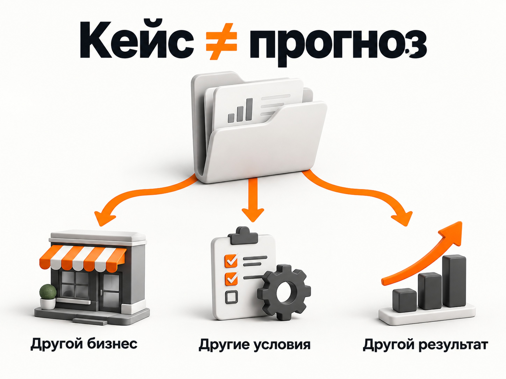
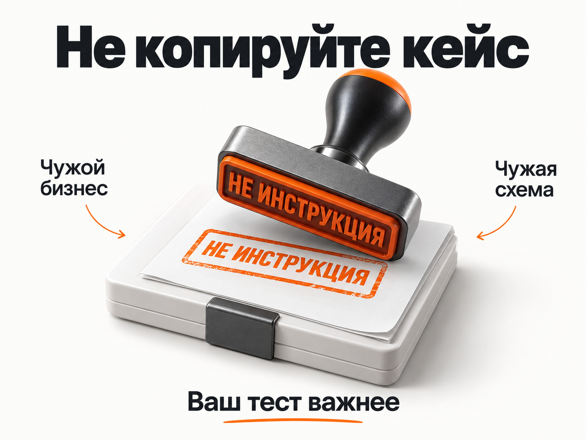

Блог о платном трафике
Как оценивать кейсы по рекламе
Кейс по рекламе - это не прогноз, не гарантия результата и не инструкция, которую нужно повторить в своем бизнесе. Он показывает только одно: при определенных исходных условиях конкретный специалист или команда выполняли определенную работу и получили определенный результат.
Поэтому подход «покажите кейс из моей ниши за последние полгода» я считаю слишком поверхностным способом оценки специалиста.
У двух компаний из одной ниши могут отличаться цены, продукт, бренд, сайт, регион, отдел продаж, рекламный бюджет, конкуренты, сезон, накопленная база, аналитика и десятки других факторов. В одном проекте лид за 3 000 ₽ может быть отличным результатом, а в другом с такой же тематикой - убыточным.
Кейс полезен. Но только если правильно понимать, что именно он способен подтвердить.
Кейс - не прогноз результата
Допустим, маркетолог показывает кейс стоматологии:
- 300 заявок;
- стоимость заявки 2 000 ₽;
- реклама работала через Яндекс Директ;
- период - шесть месяцев.
Из этого нельзя сделать вывод, что другая стоматология получит заявки по 2 000 ₽.
Мы пока не знаем:
- какие именно услуги рекламировались;
- в каком городе;
- сколько стоили услуги;
- насколько известна клиника;
- какой использовался сайт;
- что считалось заявкой;
- сколько заявок оказалось целевыми;
- сколько людей реально записалось;
- сколько дошло до приема;
- какой рекламный бюджет использовался;
- насколько сильным был отдел продаж;
- какие акции и предложения работали в тот момент.
Даже если все эти данные известны, повторить условия полностью невозможно.
Поэтому кейс можно использовать как ориентир и подтверждение опыта, но не как обещание будущего результата.
Похожая проблема возникает при попытке сравнивать «средние показатели по нише». Я подробно разбирал это на примере конверсии из лида в продажу: даже одинаковый процент может означать совершенно разные результаты, если компании по-разному определяют лиды и продажи.

Что кейс действительно может показать
Хороший кейс отвечает не на вопрос «сколько будет стоить моя заявка?», а на другие вопросы.
Работал ли специалист с похожей задачей? Понимает ли особенности этого рынка? Как анализирует проблему? Какие гипотезы проверяет? Может ли объяснить, почему принимал те или иные решения? Смотрит ли он дальше рекламного кабинета?
Сам результат тоже полезен, но намного интереснее путь к нему.
Например, для меня сильнее выглядит кейс, в котором специалист показывает:
«Запустили три направления. Одно не сработало. Выяснили причину. Изменили посадочную страницу. Передали квалификацию лидов из CRM. Отключили часть аудитории. После этого экономика улучшилась».
Такой материал показывает мышление специалиста.
Кейс в стиле «было 100 заявок, стало 300» без контекста показывает значительно меньше.
Почему кейс именно из вашей ниши переоценивают
Заказчики часто ставят очень жесткое условие:
«Нужен кейс именно в нашей нише, желательно свежий, не старше полугода».
Релевантный опыт действительно полезен. Специалисту не приходится с нуля изучать терминологию, спрос, особенности продукта и типичные проблемы.
Но наличие свежего кейса не делает специалиста автоматически сильнее остальных.
Представим двух специалистов.
Первый работает с рекламой 10 лет, ведет разные сложные проекты, умеет работать с аналитикой, CRM, качеством лидов, сайтами и экономикой бизнеса. Именно вашей нишей он занимался два года назад.
Второй занимается рекламой полтора года, но неделю назад работал с вашим прямым конкурентом.
Оценивать второго выше только из-за более свежего кейса странно.
Опыт конкретной ниши - один из критериев. Не главный и тем более не единственный.
Сам Яндекс в материалах о выборе специалиста по контекстной рекламе отдельно поднимал вопрос о том, почему кейсы не должны быть главным критерием оценки исполнителя.
Кейсы можно украсть или придумать
Есть еще одна проблема, которую заказчики часто игнорируют.
Сам факт существования красивого кейса не доказывает, что работу действительно выполнял человек, который его показывает.
Чужой кейс можно переписать и опубликовать у себя. Скриншот можно отредактировать. Сейчас еще проще создать убедительную иллюстрацию или интерфейс с помощью генеративных инструментов.
Поэтому фраза «там есть скриншоты из рекламного кабинета» сама по себе ничего не гарантирует.
Подделывать можно и отзывы.
Даже просьба дать телефон или почту бывшего клиента не решает проблему полностью. Если человек сознательно хочет обмануть заказчика, он может дать контакт знакомого, который подтвердит нужную историю.
Это не значит, что кейсам, отзывам и рекомендациям вообще нельзя доверять. Значит только то, что нельзя строить всю оценку специалиста на одном легко имитируемом доказательстве.
Чем больше независимых признаков совпадает, тем лучше.
Не стоит слишком глубоко изучать чужие кейсы
Я вообще не вижу большого смысла подробно разбирать чужой рекламный кейс в попытке понять, подойдет ли описанный подход вашему бизнесу.
Можно изучать, какой был бюджет, что считали лидом, какой использовали сайт, какие кампании запускали, какие аудитории тестировали, сколько получили продаж. Но чем глубже вы погружаетесь в эти детали, тем очевиднее становится проблема: это все равно другой бизнес и другие условия.
Другой сайт. Другой продукт. Другие цены. Другой регион. Другой спрос. Другая конкуренция. Другой бренд. Другой отдел продаж. Другой период запуска. Другие накопленные данные.
Даже если маркетолог подробно раскрыл кейс на десяти страницах, повторить его у вас невозможно.
Поэтому я бы вообще не воспринимал кейс как материал, который нужно внимательно изучить и затем пытаться перенести найденные решения на свой проект.
Чужие цифры практически ничего вам не обещают
Особенно бессмысленно цепляться за CPL, CPA и другие итоговые показатели.
Если в кейсе написано, что лид стоил 1 500 ₽, это не значит, что 1 500 ₽ являются хорошим ориентиром для вашего проекта.
Даже две компании из одной ниши могут иметь совершенно разную экономику.
Одна продает услугу за 20 000 ₽, другая за 100 000 ₽. У одной половина обращений превращается в продажи, у другой - каждое десятое. У одной сильный бренд и хорошие отзывы, у другой новый сайт и практически отсутствует репутация.
Сравнивать стоимость заявки между ними почти бессмысленно.
То же самое касается количества заявок, конверсии сайта, рекламного бюджета и остальных показателей.
Чужая рекламная схема тоже не является инструкцией
Еще одна ошибка - смотреть кейс и пытаться повторять использованные в нем инструменты.
Например:
«В этом кейсе хорошо сработала РСЯ - значит, нам тоже нужна РСЯ».
Или:
«Они использовали оплату за конверсии - давайте сделаем так же».
Или:
«Основные лиды пришли из Мастера кампаний - значит, нам нужен Мастер кампаний».
Так рекламная система не работает.
Один и тот же инструмент может прекрасно работать в одном проекте и не давать приемлемого результата в другом. Более того, спустя несколько месяцев те же настройки могут показывать уже другой результат даже в том же самом проекте.
Поэтому чужой кейс не должен превращаться в техническое задание для вашей рекламы.

Сейчас информацию о рынке проще собирать иначе
Раньше кейсы действительно были одним из основных способов посмотреть, что происходит в конкретной нише.
Сейчас один кейс как источник информации сильно потерял ценность.
Если нужно понять рынок, гораздо полезнее собрать сразу множество свежих источников: кейсы разных компаний, обсуждения, данные рекламных площадок, исследования, сайты конкурентов и другую доступную информацию.
С помощью нейросетей такой массив можно довольно быстро обработать, сравнить подходы, найти повторяющиеся закономерности и получить гораздо более объективную картину, чем из одного проекта конкретного маркетолога.
И даже результат такого исследования будет только ориентиром.
Реальную стоимость привлечения клиента, эффективные кампании, рабочие аудитории и подходящую стратегию для конкретного бизнеса показывает только собственная статистика после запуска рекламы.
Тогда зачем вообще нужны кейсы
По сути, у кейсов остается довольно простая функция.
Они подтверждают, что человек действительно работал с рекламой, решал определенные задачи и получал какие-то результаты.
Если есть кейс из вашей тематики - можно увидеть, что специалист с ней уже сталкивался. Если есть десятки разных подробных кейсов за несколько лет - это дополнительно показывает объем его практического опыта.
На этом я бы роль кейсов практически и ограничивал.
Не нужно пытаться найти в них прогноз. Не нужно искать готовую стратегию. Не нужно считать чужой CPL нормативом. Не нужно подробно разбирать каждую настройку.
Кейс - это свидетельство прошлой работы. Не более того.
Один скриншот слабее последовательной профессиональной истории
Кейс имеет больший вес, если он существует не сам по себе, а является частью понятной профессиональной истории человека.
Есть ли у специалиста нормальный сайт? Как давно он работает? Публикует ли статьи? Есть ли видео или профессиональный канал? Насколько глубоко он разбирает темы? Совпадает ли то, что он рассказывает публично, с содержанием его кейсов?
Если у человека десятки статей, кейсов, профессиональных материалов и несколько лет публичной работы, это сложнее сфальсифицировать, чем один красивый PDF с цифрами.
Поэтому я бы воспринимал кейс как один из элементов подтверждения опыта, а не как самостоятельное доказательство квалификации.
Юридический статус тоже дает дополнительный контекст
Наличие ИП само по себе не делает человека хорошим маркетологом. Самозанятый тоже может официально работать с компаниями.
Но при комплексной оценке полезно смотреть, насколько профессиональная деятельность человека выглядит постоянной и нормально организованной.
Есть ли договор? Понятные реквизиты? Документы? Постоянный сайт? История работы? Нормальные условия сотрудничества?
ИП, работа по договору, ЭДО, собственный сайт и многолетняя публичная деятельность по отдельности ничего не гарантируют. В совокупности они дают дополнительное представление о том, насколько серьезно человек занимается своей профессией.
Разговор со специалистом часто дает больше информации, чем кейс
Сам кейс показывает только результат конкретного проекта в прошлом.
Разговор позволяет оценить, как человек думает сейчас.
Полезно обратить внимание, какие вопросы специалист задает о бизнесе. Интересуется ли экономикой продаж, качеством прошлых лидов, сайтом, продуктом, аналитикой и отделом продаж.
Если человеку достаточно услышать нишу и рекламный бюджет, после чего он уже точно знает, сколько заявок получите и по какой цене, для меня это скорее тревожный сигнал.
Нормальный специалист сначала пытается понять систему.
Этот раздел не заменяет полноценную оценку подрядчика. Его задача здесь другая - показать, почему один релевантный кейс не способен дать столько информации о специалисте, сколько содержательный разговор и его общая профессиональная история.
Что изменили нейросети
Раньше отдельный кейс мог быть одним из немногих способов узнать, какие результаты вообще встречаются в конкретной нише.
Сейчас ситуация изменилась.
Можно собрать десятки свежих публикаций, кейсов, обсуждений и исследований по рынку, обработать их с помощью нейросети, сравнить диапазоны CPL, CPA, конверсий, рекламные каналы и используемые подходы.
Один чужой проект на этом фоне становится значительно менее ценным как источник прогноза.
Но есть важная оговорка.
Даже анализ сотни чужих кейсов не скажет точно, сколько будет стоить клиент именно у вас. Он позволяет сформировать гипотезы и рабочий диапазон для первоначального медиаплана.
Дальше все равно нужен реальный тест.
Поэтому кейсы не исчезают. Меняется их роль.
Раньше заказчик мог воспринимать кейс как обещание:
«У него получилось там - значит, получится у меня».
Правильнее воспринимать его как подтверждение:
«Этот специалист сталкивался с подобной задачей, вот как он рассуждал и что получил в тех конкретных условиях».
Какое место кейсы должны занимать при оценке специалиста
Я бы не ставил кейсы на первое место и тем более не использовал единственный критерий «есть ли свежий кейс именно в моей нише».
Кейс имеет смысл рассматривать вместе с:
- опытом и продолжительностью работы;
- качеством других кейсов;
- статьями, видео и профессиональным контентом;
- способностью специалиста объяснять свои решения;
- пониманием аналитики и экономики бизнеса;
- прозрачностью рабочих процессов;
- отзывами и рекомендациями;
- форматом официальной работы;
- содержательным личным разговором.
Если нужно отдельно разобраться именно в выборе формата работы со специалистом, на сайте есть статья «Директолог или агентство: кого выбрать».
Здесь же вывод проще: наличие одного подходящего кейса не должно перевешивать все остальные признаки.
Как я отношусь к собственным кейсам
На моем сайте опубликовано более 40 кейсов по B2B, B2C, недвижимости, образованию, Telegram Ads и другим направлениям.
Но я не считаю, что любой из них гарантирует новому клиенту аналогичный результат.
Они нужны для другого.
По кейсам можно понять, с какими задачами я работал, какие рекламные инструменты использовал, какие результаты получались и насколько мой опыт вообще пересекается с задачей потенциального клиента.
Посмотреть кейсы можно на главной странице сайта.
А прогноз для нового проекта нужно строить отдельно: анализировать рынок, спрос, продукт, сайт, экономику, конкурентов и уже имеющуюся статистику. После этого запускать тест и корректировать ожидания по фактическим данным.
Главное
Кейс по рекламе - это свидетельство прошлого опыта, а не обещание будущего результата.
Хороший кейс помогает понять, как специалист работал с конкретной задачей, какие решения принимал и что получил в определенных условиях.
Проблема начинается, когда заказчик превращает «свежий кейс в моей нише» в главное доказательство квалификации и начинает воспринимать чужие цифры как прогноз для собственного бизнеса.
Кейсы стоит читать без лишнего доверия, не переоценивать и использовать только как один из второстепенных источников информации. Именно в этой роли они действительно полезны.